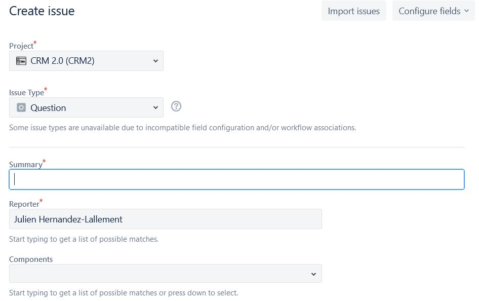
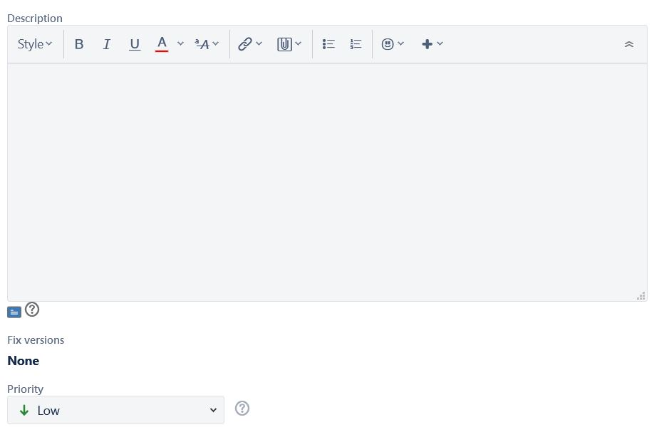
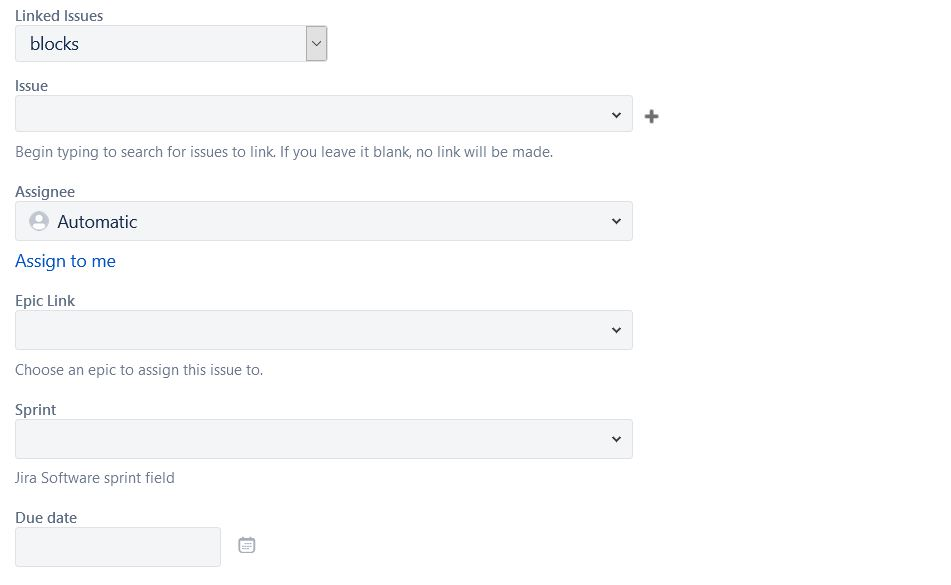
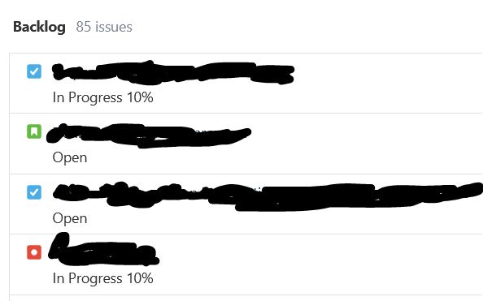
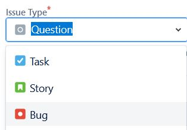
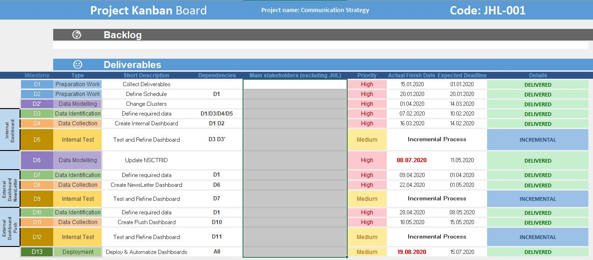
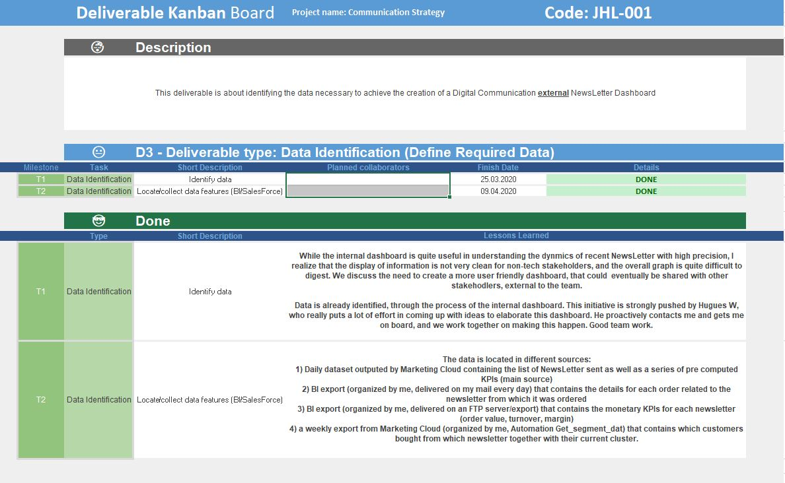

course: Few Ideas on Managing a Data Project
By Julien Hernandez Lallement, 2021-05-02, in category Opinion
By Julien Hernandez Lallement, 2021-05-02, in category Opinion
The topic on how to manage data project is quite tricky and I can imagine that many of you will comment or disagree on the proceedings described in this post. I want to emphasize that while a general tool & guideline is an important aspect of managing (data) projects, each project has its specificities that require some tweeking around.
What is written here is a result of me learning to track, document and disseminate the status of different data projects. As every method, it is evolving with time and can be improved in several aspects.
Still, some of you in need of guidance might find this post useful ;)
With that out of the way, let's start.
A data project, from my perspective, is a project that uses data as its main substrate or result. In other words, any project that require data to output a product (for example, a dashboard) or produces data itself (example: an ML pipeline that rates customers based on predictions and selects promising ones).
Data projects are not new, but the last decades have seen an important surge in their complexity and requirements, due mainly to the formidable increase in data availability and production.
Managing project in general is not an easy task. Many framework (PMP, PRINCE2) are proposed and maintained by major institutions, and provide managers with tools to guide, track, and document the project, and of course, close the project successfully.
Because data often mean code (not always though), data projects are typically managed (from what I could experience at least) in an agile mode. SCRUM or KANBAN are different ways to approach data projects. The problem here is that these methods are well suited for software development, but not always to data projects.
Coming back to what I wrote earlier, I therefore decided to combine methodolodies from both waterfall (PMP) and Agile (SCRUM) to manage my data projects.
JIRA is a tool that allow users to interact in the tasks required fora given project.
When a project is created, separater users can be invited to work in that space. JIRA is ticket-based; in other words, users create ticket (in JIRA terms, issues), assigned to themselves or others, that are described a task, question or list of tasks required to accomplish the project.
Below, a screenshot of the task creation details:
  
All tasks are automatically put in a backlog (SCRUM terminology) which represent all the tasks needed to be performed still by the team. The team can decide to organize its work on a weekly basis, where tasks can already be attributed to a given week. Alternatively, tasks can stay in the backlog, and be place in weeks as time goes by.
The backlog if therefore a list of tasks to be done, and allow for tracking of current progress. See picture below:

Importantly, a user can create different categories of tickets, based on the current need. The ones that I find most useful are 1) Question, 2) Task, 3) Bug and 4) Story.
1) Questions allow users to ask question to someone in particular. Importantly, the question and answer can be documented thanks to the use of JIRA, which will reduce the recurrent questions, in particular when new team members join the team. In addition, the question can be documented using Confluence (see below)
2) Task describe a task that needs to be done in order for the project to move forward. Tasks can be described, and depicted as currenly blocked by, or linked to, other tickets.
3) Bugs describe a bug encountered in a system (dashboard not showing correct data, broken ML pipe)
4) Stories allow user to put several sub tasks together required to achieve a higher level goal. I use that for sub-project deliverables that require parallel or serial tasks to be accomplished.

Confluence is a tool that allows clear and structured documentation. Maybe the best aspect of this tool is its direct link to JIRA, which allow users to extensively document tikects that required particular proceedings.
I won't discuss Confluence here since its use is quite self explanatory. It goes hand in hand with JIRA and allows documentation to be linked to current work.
In the PMP framework, an important step in every process of a given project area is the so-called lessons learned documentation. I found that step to be often overlooked in waterfall-like projects because documenting is often regarded as secondary, if not tertiary. However, "Documentation is a Love Letter That You Write to Your Future Self" as famoulsy stated by Damian Conway.
While Confluence is a very nice tool to document extensively how particular tickets were solved, and JIRA is important in monitoring projects, your particular organisation might not have access to these tools, which are not fot free unfortunately.
Before we started using the Atlassian packages, we took the iniative of managing my projects using good old spreadsheet management techniques, which I share here below. As a matter of fact, I kept on using these sheets in some cases, because it allows, within one screenshow, to inform upper management on the project status.
The idea is simple: in a spreadsheet (Excel or Google sheet), create two categories:
1) Project Charter: describe the project in a few lines. Provide overall deadline, and stakeholder's list. The list should be updated whenever new stakeholders (primary or secondary) join the project. Stakehodlers are any individual that are affected by the outcome of the project or perceive themselves as affected by it.
2) Kanban Board: The Kanban board shows the overall subtasks required to finish the project.
The format was taken from a KANBAN board downloaded somewhere on the web. I honestly forgot where I got the initial board, and since it was modified since then, I will simply provide the view as an inspiration. Below, a screenshot of a kanban board from a project aiming at creating a dashboard showing digital communication KPIs.

The KANBAN shows:
When that is done, a sheet is created for each deliverable, which show

Importantly, when tasks are done, the lower section MUST be filled with information regarding the completion proceedings of the given task. This includes:
Before the use of Atlassian packages, I typically provided this document (as a Google Sheet accessible by the whole team) to any new comer as well as primary stakeholders of the project. That allowe users to monitor the project and to get up to speed the current status.
This is, in a nutsehll, how I manage and document data projects. I have a very similar approach when the project is about developing a ML approach to answer a question. In such cases, the code can be hosted on the third Atlassian package, BitBucket, which is a private version of GitHub. I won't be discussing this feature here.